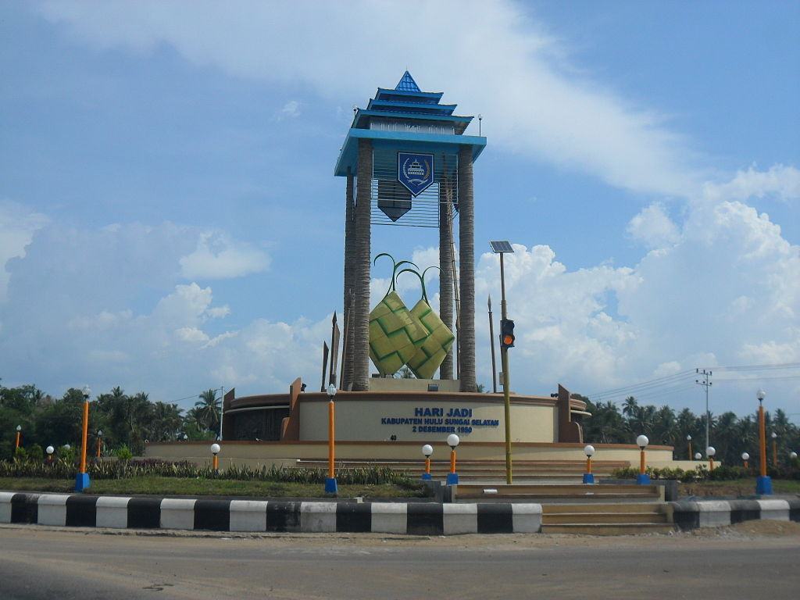
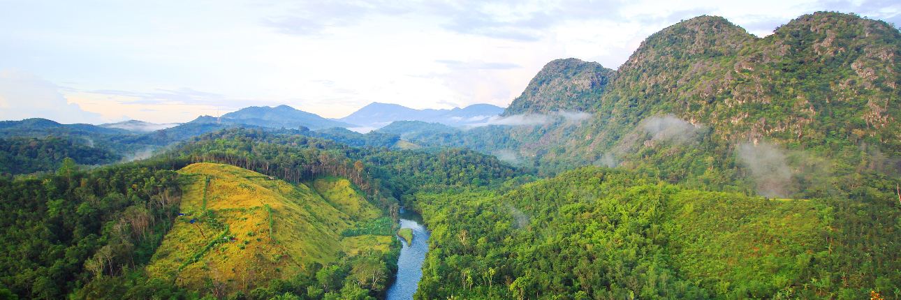
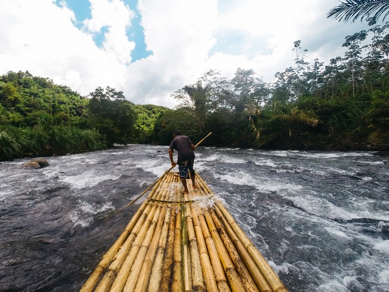
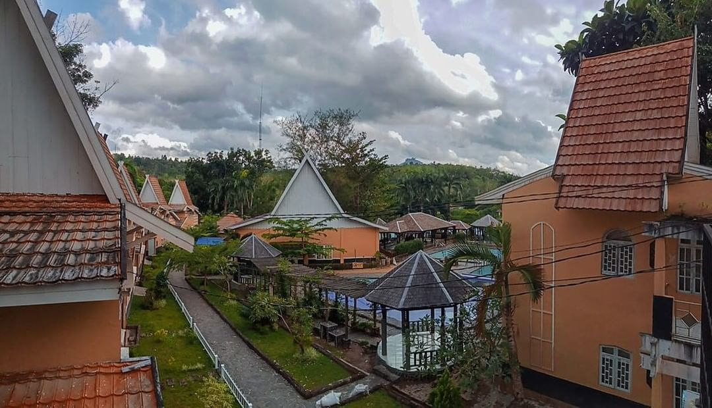
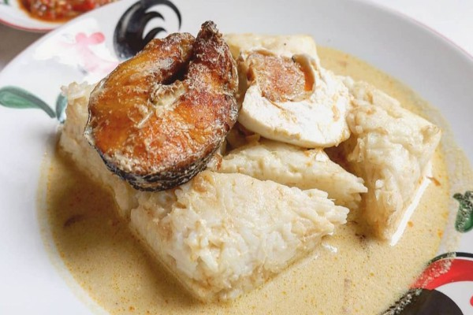
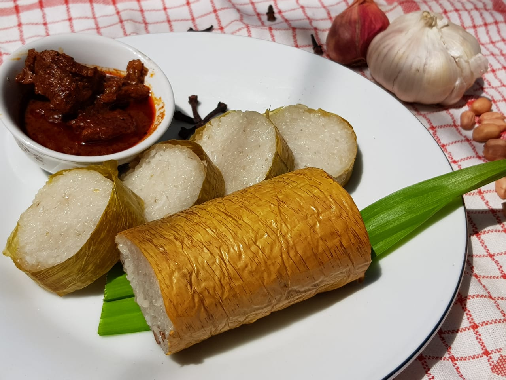

Sejarah

Kabupaten Hulu Sungai Selatan, yang berdiri pada tanggal 2 Desember 1950
berdasarkan Undang-Undang Nomor 27 Tahun 1959, memiliki sejarah yang panjang dan
penuh perjuangan. Sebelum menjadi kabupaten otonom, wilayah ini merupakan bagian
dari Kabupaten Hulu Sungai yang dibentuk pada tahun 1945.
Selama masa kolonial, Hulu Sungai Selatan menjadi pusat pergerakan kemerdekaan dan
mengalami beberapa peristiwa heroik, termasuk pertempuran di Benteng Madang.
Setelah kemerdekaan, kabupaten ini tetap setia kepada pemerintah pusat meskipun
terjadi pemberontakan PRRI/Permesta di Sumatera dan Sulawesi pada tahun 1957.
Pada tahun 1964, Kabupaten Hulu Sungai Selatan dimekarkan menjadi dua kabupaten,
yaitu Kabupaten Hulu Sungai Selatan dan Kabupaten Tapin, untuk mempercepat
pembangunan dan pelayanan kepada masyarakat.
Pada tahun 2002, Kabupaten Hulu Sungai Selatan kembali dimekarkan dengan
terbentuknya Kabupaten Balangan dari sebagian wilayahnya.
Geografis

Letak Geografis kabupaten Hulu Sungai Selatan terletak antara 2°29′ 59″- 2° 56’10″ LS dan 114°51′ 19″ – 115° 36’19″ BT. Secara geologis daerah ini terdiri dari pegunungan yang memanjang dari arah timur ke selatan, namun dari arah barat ke utara merupakan dataran rendah alluvial yang kadang-kadang berawa-rawa. Kondisi topografi ini menyebabkan udara di wilayah ini terasa dingin agak lembap dengan curah hujan pada tahun 2002 sebanyak 2.124 mm.
Tanah di wilayah Hulu Sungai Selatan Selatan sebagian besar berupa hutan dengan rincian: hutan lebat (780.319 ha), hutan belukar (377.774 ha), hutan rawa (90.060 ha), hutan sejenis (352.840 ha), tanah berupa semak/alang-alang (870.314 ha), berupa rumput (50.119 ha), dan lain lain (83.014 ha). Sedangkan penggunaan untuk sawah 413.107 ha, perkebunan 437.037 ha dan untuk perkampungan 57,903 ha, serta untuk tegalan (48.612 Ha). Bentuk geologi wilayah Hulu Sungai Selatan sebagian besar berupa Aluvium Muda dan Formasi Berai.
Wisata
Hulu Sungai Selatan memiliki beberapa destinasi wisata yang menarik dan mempesona.
Loksado

Loksado dikenal dengan kegiatan bamboo rafting di Sungai Amandit, yang menjadi daya tarik
utama bagi wisatawan. Dengan aliran sungai yang menantang namun aman, wisatawan dapat
menikmati petualangan seru sambil disuguhi pemandangan hutan yang lebat dan keindahan alam sekitar.
Selain itu, Loksado juga menawarkan pengalaman budaya dengan desa-desa tradisional Dayak yang masih
memegang teguh adat istiadat mereka.
Bukit Langara
Bukit Langara menawarkan pemandangan alam yang luar biasa dengan hamparan hijau yang menyegarkan mata.
Dari puncak Bukit Langara, pengunjung dapat menyaksikan panorama yang memukau, terutama saat matahari
terbit dan terbenam, yang menciptakan suasana magis di atas bukit. Jalur pendakian yang menantang namun
menyenangkan menambah daya tarik tersendiri bagi para pecinta alam dan petualangan.
Pemandian Air Panas Tanuhi

Pemandian Air Panas Tanuhi terletak di tengah-tengah keindahan alam pegunungan, pemandian ini
menawarkan pengalaman relaksasi yang menyegarkan dengan sumber air panas alaminya. Air panas
di Tanuhi dipercaya memiliki kandungan mineral yang bermanfaat bagi kesehatan, menjadikannya tempat
yang ideal untuk melepas lelah dan memulihkan tubuh. Selain berendam di kolam air panas, pengunjung
juga dapat menikmati pemandangan alam sekitar yang menenangkan dan udara segar pegunungan.
Makanan Khas
Kabupaten Hulu Sungai Selatan terkenal dengan beragam makanan khas yang menggugah selera, mencerminkan kekayaan budaya dan tradisi kuliner daerah ini.
Ketupat Kandangan

Salah satu hidangan paling ikonik adalah Ketupat Kandangan, yang sering menjadi makanan wajib
saat perayaan hari besar. Ketupat ini terbuat dari nasi yang dibungkus dengan daun kelapa muda,
kemudian dimasak hingga menjadi padat. Ketupat Kandangan biasanya disajikan dengan kuah santan
yang gurih dan ikan haruan (ikan gabus) yang dibakar atau digoreng. Rasanya yang lezat dan
teksturnya yang khas membuatnya menjadi favorit di setiap acara keluarga dan festival.
Gangan Asam Banjar
Gangan Asam Banjar juga merupakan hidangan yang sangat populer. Gangan Asam adalah sup ikan berkuah
asam yang segar, terbuat dari ikan patin atau ikan gabus yang dimasak dengan bumbu asam jawa, kunyit,
dan daun kemangi. Kuahnya yang segar dan cita rasa ikan yang lembut membuat hidangan ini menjadi pilihan
yang sempurna untuk makan siang atau makan malam. Gangan Asam Banjar biasanya disajikan dengan nasi hangat.
Lemang Kandangan

Lemang terbuat dari beras ketan yang dimasak dalam bambu dengan santan dan dibakar hingga matang,
lemang ini memiliki aroma yang harum dan rasa yang gurih. Proses memasak lemang yang menggunakan
bambu memberikan cita rasa yang khas dan tekstur yang lembut serta kenyal. Biasanya, Lemang
Kandangan dinikmati dengan lauk-pauk seperti rendang, gulai, atau bahkan ikan bak.